Orchard's localization management is hosted on an external service (Crowdin), the project is available for the public and contributions are welcome!
Orchard的本地化管理托管在外部服务[（Crowdin）]（https://crowdin.net/），[该项目可供公众使用]（https://crowdin.net/project/orchard-cms）和欢迎捐款！
Orchard supports two kinds of localization:
Orchard支持两种本地化：
-
Localization of text strings in the Orchard application and in installed modules.
-
Orchard应用程序和已安装模块中文本字符串的本地化。
-
Localization of database-driven content items.
-
数据库驱动的内容项的本地化。
This topic describes both of these features.
本主题描述了这两个功能。
Localizing the Orchard Application and Orchard Modules
本地化果园应用程序和果园模块
All strings in the Orchard application are output through a single T() method that can look up a translated string based on the default site culture. By default, Orchard includes strings for English (en-US), but you can add support for additional cultures. Translations for the dashboard UI and all static strings in the front end can also be added to the application through translation files in .po format. To localize a site for a culture, you download and install the appropriate set of .po files, and then you update your site settings as shown in this section.
Orchard应用程序中的所有字符串都通过单个T（）方法输出，该方法可以根据默认的站点文化查找已翻译的字符串。默认情况下，Orchard包含英语字符串（en-US），但您可以添加对其他文化的支持。仪表板UI的翻译和前端的所有静态字符串也可以通过_.po_格式的翻译文件添加到应用程序中。要本地化文化的站点，请下载并安装适当的_.po_文件集，然后更新站点设置，如本节所示。
Note In .NET Framework applications, localization is usually done using .resx files and satellite assemblies. Orchard takes a more lightweight approach that uses .po files. In Orchard, the number of translation files is the number of modules multiplied by the number of supported cultures. That number could rapidly grow, and the satellite-assembly design wasn't built for that kind of usage. On the other hand, .po files can be loaded and unloaded on demand. Like .resx files, .po files are a standard format for which many tools exist.
注意在.NET Framework应用程序中，本地化通常使用_.resx_文件和附属程序集完成。 Orchard采用更轻量级的方法，使用_.po_文件。在Orchard中，翻译文件的数量是模块的数量乘以支持的文化的数量。这个数字可能会迅速增长，并且卫星组装设计不是为这种用途而建造的。另一方面，可以根据需要加载和卸载_.po_文件。与_.resx_文件一样，_. po_文件是存在许多工具的标准格式。
Installing translation files
安装翻译文件
As an example, download a set of .po translation files for French (fr-FR). Browse to the page for the files at the following URL:
例如，下载一组法语（fr-FR）的_.po_翻译文件。浏览到以下URL的文件页面：
https://crowdin.net/download/project/orchard-cms/fr.zip.
https://crowdin.net/download/project/orchard-cms/fr.zip。
Click the link to download the .po files and save the .zip file to your computer.
单击链接以下载_.po_文件并将_.zip_文件保存到您的计算机。
Method 1: Extracting the zip
方法1：提取zip
Extract the downloaded .zip file into the root folder of your website. Make sure you extract the contents to the actual Orchard root folder, and not to a subfolder named for the .zip file. When Windows opens a Confirm Folder Replace window and asks whether you want to merge the extracted contents into the Orchard folders of the same names in your website, select Do this for all current items and then click Yes to merge in the translation files.
将下载的_.zip_文件解压缩到您网站的根文件夹中。确保将内容提取到实际的Orchard根文件夹，而不是提取到为_.zip_文件命名的子文件夹。当Windows打开确认文件夹替换窗口并询问您是否要将提取的内容合并到网站中相同名称的Orchard文件夹中时，请选择对所有当前项目执行此操作然后单击是以合并翻译文件。
This method of extracting the po files by expanding the zip file into your site's directory is very simple but if your site does not have all the translated modules that are in the file, you may end up with some additional directories that you don't need. In order to avoid that, you can use the following alternative method.
这种通过将zip文件扩展到您的站点目录来提取po文件的方法非常简单，但如果您的站点没有文件中的所有已翻译模块，您最终可能会得到一些您不需要的其他目录。为避免这种情况，您可以使用以下替代方法。
Method 2: Using Translation Manager
方法2：使用翻译管理器
The Translation Manager Feature in Vandelay Industries module, available from the gallery, adds commands to install translation files more parsimoniously.
[Vandelay Industries]（http://gallery.orchardproject.net/List/Modules/Orchard.Module.Vandelay.Industries）模块中的翻译管理器功能（可从库中获得）添加命令以更加简洁地安装翻译文件。
Once you have the module installed and the po file that you want to install downloaded, enter the following command, replacing the path to the po file as necessary:
安装模块并下载要安装的po文件后，输入以下命令，根据需要替换po文件的路径：
install translation c:\temp\fr.zip
This should have only extracted those resources for the modules that are actually installed that it has translations for. If a module is not found, running the command won't create unnecessary directories and your Orchard site will remain clean.
这应该只为已翻译的实际安装的模块提取这些资源。如果找不到模块，则运行该命令不会创建不必要的目录，并且您的Orchard站点将保持干净。
If you later install additional modules for which a translation exists, it is possible to re-run the command.
如果稍后安装了存在转换的其他模块，则可以重新运行该命令。
Switching the site to another culture
将网站切换到另一种文化
To change the default culture for the application, go to the Settings => General screen in the Orchard dashboard. Under Default Site Culture, click Add or remove supported cultures for the site.
要更改应用程序的默认区域性，请转到Orchard仪表板中的 Settings => General 屏幕。在默认站点文化下，单击添加或删除站点支持的文化。
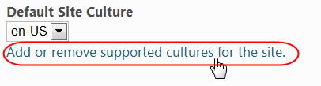
In the Cultures screen, select a culture from the Add a culture list (for example, fr-FR) and then click Add. The culture code is added under Cultures this site supports. To remove a culture, click the x button next to it.
在 Cultures 屏幕中，从添加文化列表中选择一种文化（例如， fr-FR ），然后单击添加。文化代码添加在此网站支持的文化下。要删除文化，请单击旁边的 x 按钮。
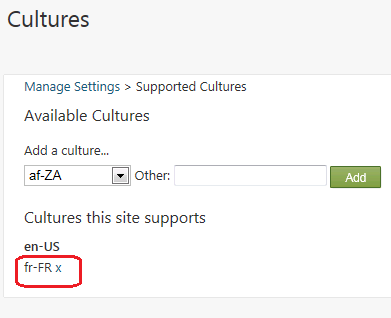
After you've added one or more cultures, click General on the dashboard to return to the Manage Settings screen.
添加一个或多个文化后，单击仪表板上的常规以返回管理设置屏幕。
In the Default Site Culture list, select the culture to set as the default. When you're done, click Save.
在默认站点文化列表中，选择要设置为默认值的区域性。完成后，单击保存。
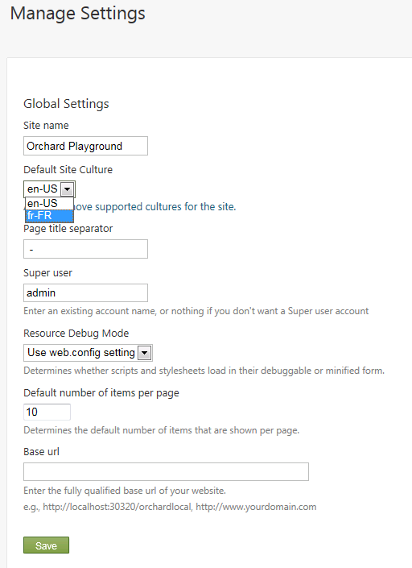
Assuming that you have the appropriate set of .po files installed, applying a new culture has the effect of translating the text in the dashboard menu and UI text. The following illustration shows the effect of changing the culture to fr-FR.
假设您安装了适当的_.po_文件集，则应用新文化可以翻译仪表板菜单和UI文本中的文本。下图显示了将文化更改为 fr-FR 的效果。
Note
！注意
The translation files might not be complete.
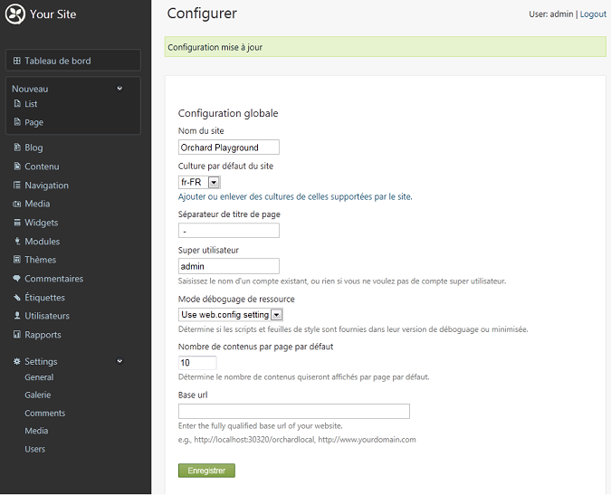
Setting the default site culture to a specific culture won't have any effect unless you have a corresponding translation file installed. Orchard searches the following paths to find translation files, from most to least specific:
除非您安装了相应的翻译文件，否则将默认站点区域性设置为特定区域性将不会产生任何影响。 Orchard搜索以下路径以查找翻译文件，从大多数到最不具体：
-
Core localization file path ~/Core/App_Data/Localization/<culture-code>/orchard.core.po
-
核心本地化文件路径 ~ / Core / App \ _Data / Localization /＆lt; culture-code＆gt; /orchard.core.po
-
Modules localization file path ~/Modules/<module-name>/App_Data/Localization/<culture-code>/orchard.module.po
-
模块本地化文件路径 ~ / Modules /＆lt; module-name＆gt; / App \ _Data / Localization /＆lt; culture-code＆gt; /orchard.module.po
-
Theme localization file path ~/Themes/<theme-name>/App_Data/Localization/<culture-code>/orchard.theme.po
-
主题本地化文件路径 ~ /主题/＆lt; theme-name＆gt; / App \ _Data / Localization /＆lt; culture-code＆gt; /orchard.theme.po
-
Root localization file path ~/App_Data/Localization/<culture-code>/orchard.root.po
-
根本地化文件路径 ~ / App \ _Data / Localization /＆lt; culture-code＆gt; /orchard.root.po
-
Tenant localization file path ~/App_Data/Sites/<tenant name>/Localization/<culture-code>/orchard.po
-
租户本地化文件路径 ~ / App \ _Data / Sites /＆lt;租户名称＆gt; /本地化/＆lt; culture-code＆gt; /orchard.po
Translation availability
翻译可用性
You can download additional .po files for other cultures from http://orchardproject.net/localization. Translations are provided by the community. If you don't find the culture you're looking for, please consider contributing it. It's a few hours of work and it will benefit the whole community.
您可以从[http://orchardproject.net/localization](http://orchardproject.net/localization）下载其他文化的其他_.po_文件。翻译由社区提供。如果您没有找到您正在寻找的文化，请考虑贡献它。这是几个小时的工作，它将使整个社区受益。
Contributing new translations
贡献新的翻译
Working with a plain text editor
使用纯文本编辑器
The localization tool available at https://crowdin.net/project/orchard-cms can prepare stub files for a specific language. Orchard's translations are stored in the form of PO-files in packages, that you can add to your own Orchard instance. These packages are regenerated at the beginning of every hour (the process takes 2-3 minutes). Please visit the project home page on Crowdin to see the progress of the translations for each language.
[https://crowdin.net/project/orchard-cms](https://crowdin.net/project/orchard-cms）上提供的本地化工具可以为特定语言准备存根文件。 Orchard的翻译以包中的PO文件的形式存储，您可以将其添加到您自己的Orchard实例中。这些包在每小时开始时重新生成（该过程需要2-3分钟）。请访问Crowdin上的项目主页，查看每种语言的翻译进度。
You can download all the translations for each language for both projects: Orchard CMS, Orchard CMS Gallery.
您可以下载这两个项目的每种语言的所有翻译：[Orchard CMS]（https://crowdin.net/download/project/orchard-cms.zip），[Orchard CMS Gallery]（https://crowdin.net /download/project/orchard-cms-gallery.zip）。
The downloaded .zip file contains the set of .po files that you can edit using a text editor. When you're done, please subscribe to our localization mailing list by sending email to join-orchard-localization@lists.outercurve.org, and then send the zipped package of .po files to the list.
下载的_.zip_文件包含可以使用文本编辑器编辑的_.po_文件集。完成后，请通过发送电子邮件至join-orchard-localization@lists.outercurve.org订阅我们的本地化邮件列表，然后[将压缩的_.po_文件包发送到列表]（加入 - orchard-localization@lists.outercurve.org）。
Please make sure when working with .po files that the files are saved in UTF-8 with Byte Order Mark. This is usually a setting in your text editor (in Notepad it is under the Encoding drop-down in the "Save As" dialog).
使用_.po_文件时请确保文件以带字节顺序标记的UTF-8保存。这通常是文本编辑器中的设置（在记事本中，它位于“另存为”对话框中的“编码”下拉列表下）。
Translation File Format
翻译文件格式
The following illustration shows the format of a translation file. Each text string is represented by elements listed in the following table.
下图显示了翻译文件的格式。每个文本字符串由下表中列出的元素表示。
A reference (see below) | #: reference-string
参考（见下文）| ＃：reference-string
----------------------- | ---------------------
- | ---------------------
An ID, which is often the original (untranslated) string. After the ID is set, this string should not be changed even if the English string changes, so that existing translations continue to work even if they're not immediately updated. | #| msgid "id-string"
ID，通常是原始（未翻译）字符串。设置ID后，即使英语字符串发生更改，也不应更改此字符串，以便现有翻译即使不立即更新也能继续工作。 | ＃| msgstr“id-string”
The current English string for reference. This helps the translator. | msgid "English-string"
目前的英文字符串供参考。这有助于翻译。 | msgstr“英文字符串”
The translated string. | msgstr "translated-string"
翻译后的字符串。 | msgstr“translated-string”
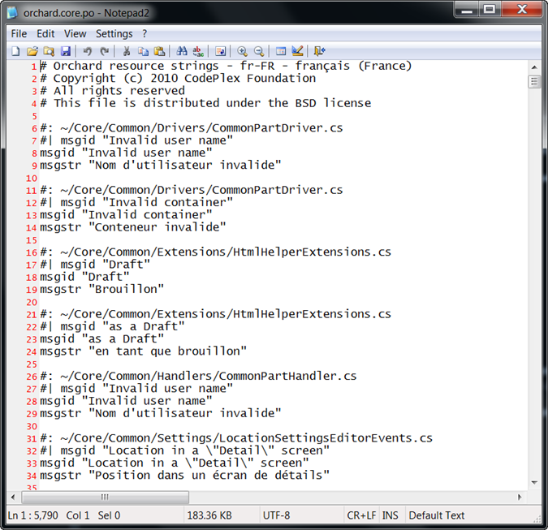
How to contribute
如何贡献
-
Register on Crowdin.
-
在[Crowdin]（https://crowdin.com/）上注册。
-
Go to the project page of Orchard CMS and Orchard CMS Gallery and apply to join the project.
-
转到[Orchard CMS]（https://crowdin.net/project/orchard-cms）和[Orchard CMS Gallery]（https://crowdin.net/download/project/orchard-cms-gallery）的项目页面。 zip）并申请加入该项目。
-
Your application will be accepted shortly and you'll be added to the project as "Proofreader" for the selected languages. This means that you'll be able to edit and approve translations (which is necessary for the translated strings to be included in the downloadable packages).
-
您的申请将很快被接受，您将被添加到项目中作为所选语言的“校对员”。这意味着您将能够编辑和批准翻译（这是翻译的字符串包含在可下载软件包中所必需的）。
-
If you are new to the Orchard translations, please consult with other translators of the same language and make sure you follow the same conventions.
-
如果您不熟悉Orchard的翻译，请咨询其他相同语言的译员，并确保遵循相同的惯例。
Resource String Reference
资源字符串参考
The reference for a resource string in a .po file (the reference-string value described in the previous section) is optional. If no reference is specified, the resource string will be used as a fallback whenever a resource with the same ID is queried with a reference that can't be found. This is a useful way to create generic resource strings that are used in multiple places in the application and are not context-sensitive. You can always override a generic fallback like this as needed.
_.po_文件中的资源字符串的引用（上一节中描述的reference-string值）是可选的。如果未指定引用，则只要使用无法找到的引用查询具有相同ID的资源，资源字符串将用作回退。这是创建在应用程序中的多个位置使用且不是上下文相关的通用资源字符串的有用方法。您始终可以根据需要覆盖此类通用回退。
The reference strings can be stored in different locations, depending on how the string is used in the application:
引用字符串可以存储在不同的位置，具体取决于应用程序中字符串的使用方式：
-
Strings from views: Use the virtual path of the view from the root of the application (for example, ~/Themes/TheThemeMachine/Views/User.cshtml).
-
来自视图的字符串：使用应用程序根目录中的视图的虚拟路径（例如，~ / Themes / TheThemeMachine / Views / User.cshtml）。
-
Strings from .cs files: Use the fully qualified type name of the class where the string is being used (for example,
Orchard.Packaging.AdminMenu). -
_.cs_文件中的字符串：使用正在使用字符串的类的完全限定类型名称（例如，
Orchard.Packaging.AdminMenu）。 -
Strings from module manifests or theme manifests: Use the virtual path of the manifest from the root of the application (for example, ~Themes/TheThemeMachine/Theme.txt). Note that module and theme manifest localization uses a path for fields as the key. For example, the Author field uses the key "Author" and the Description field of the Gallery feature would be under the key "Gallery Description".
-
来自模块清单或主题清单的字符串：使用应用程序根目录中的清单的虚拟路径（例如，~Themes /TheThemeMachine / Theme.txt）。请注意，模块和主题清单本地化使用字段路径作为键。例如，“作者”字段使用“作者”键，而“图库”功能的“描述”字段将位于“图库描述”键下。
Contributing files for third party modules
为第三方模块贡献文件
Our localization infrastructure is built to host translations for third party modules. If you are the author of a module or want to contribute translations for a module, you can generate po files for it using the Translation Manager module.
我们的本地化基础架构可用于托管第三方模块的翻译。如果您是模块的作者或想要为模块提供翻译，您可以使用[翻译管理器]为其生成po文件（http://gallery.orchardproject.net/List/Modules/Orchard.Module.Vandelay .Industries）模块。
From an Orchard command line, type the following command (for the example of the Bing.Maps module):
从Orchard命令行，键入以下命令（对于Bing.Maps模块的示例）：
extract default translation /Extensions:Bing.Maps /Output:\temp
This will create a new Orchard.en-us.po.zip file with the strings for the module. The command looks at the source code for the module and creates entries for T-wrapped strings, manifest strings and everything that should be localizable.
这将创建一个带有模块字符串的新Orchard.en-us.po.zip文件。该命令查看模块的源代码，并为T-wrapped字符串，清单字符串和应该可本地化的所有内容创建条目。
Please send this file to join-orchard-localization@lists.outercurve.org so that we can add it to the online localization database.
请将此文件发送到join-orchard-localization@lists.outercurve.org，以便我们将其添加到在线本地化数据库中。
Localizing Database-Driven Content Items
本地化数据库驱动的内容项
In addition to application and module localization, Orchard provides the ability to translate content items that are stored in the database. To localize content items, you must enable the Localization feature. In the dashboard, click Modules, and then on the Features tab you will see Localization. Click the Enable link.
除了应用程序和模块本地化之外，Orchard还提供翻译存储在数据库中的内容项的功能。要本地化内容项，您必须启用本地化功能。在仪表板中，单击 Modules ，然后在 Features 选项卡上，您将看到 Localization 。单击启用链接。
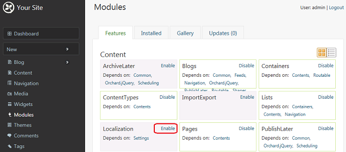
By default, both the Page and Blog Post content types are localizable, because they both contain the Localization part. You can add the Localization part to other content types that need translation. Click Content on the dashboard, and then view the items in the Manage Content screen. Notice the + New Translation link for each content item.
默认情况下， Page 和 Blog Post 内容类型都是可本地化的，因为它们都包含 Localization 部分。您可以将 Localization 部分添加到需要翻译的其他内容类型。单击仪表板上的内容，然后在管理内容屏幕中查看项目。请注意每个内容项的 +新翻译链接。
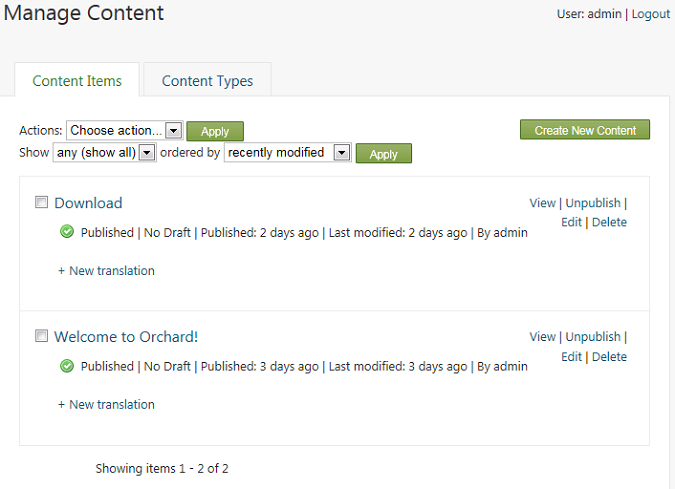
Note This link appears only if you have more than one culture enabled on the site (see previous section), and if you have enabled the Localization feature.
注意此链接仅在您在网站上启用了多个区域性时显示（请参阅上一节），并且您已启用本地化功能。
Clicking the + New Translation link allows you to define a translated version of the content item to be associated with the "parent" content item (in the site's default culture). Each translated content item is treated as a unique content item in the system. On the Translate Content editor screen, you can define the culture code for the content item. The permalink will change accordingly in order to ensure that URLs are unqiue for each translation. You can then translate the content item from the default site culture to the selected culture.
单击 +新翻译链接可以定义要与“父”内容项关联的内容项的翻译版本（在站点的默认文化中）。每个翻译的内容项都被视为系统中的唯一内容项。在 Translate Content 编辑器屏幕上，您可以定义内容项的区域性代码。永久链接将相应更改，以确保每个翻译的URL都是唯一的。然后，您可以将内容项从默认站点文化转换为选定的区域性。
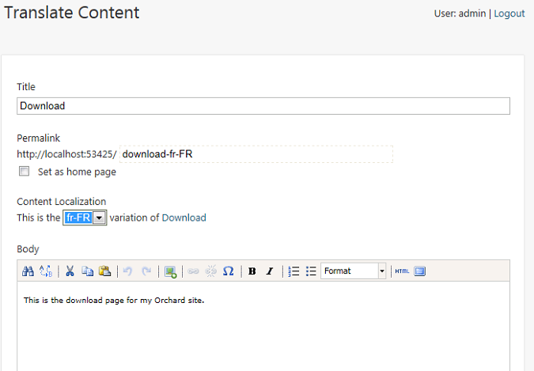
Add some translation text in the body of the page, and then click Save. After the content item is saved, the current culture code is indicated, along with links to any related content items in different cultures.
在页面正文中添加一些翻译文本，然后单击保存。保存内容项后，将显示当前文化代码，以及指向不同文化中任何相关内容项的链接。
When you browse content items on the site, if there are translations available for a content item, links to those content items will be displayed. This makes it easy for your site visitors to switch between translations of the item. This is what the site looks like when you view the English (en-US) item:
当您浏览网站上的内容项时，如果有可用于内容项的翻译，则将显示指向这些内容项的链接。这使您的网站访问者可以轻松地在项目的翻译之间切换。这是查看英语（en-US）项目时网站的样子：
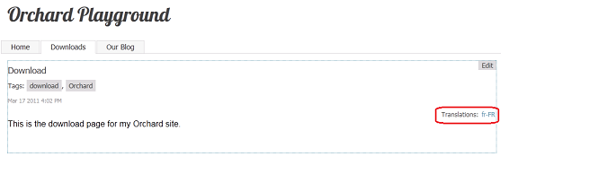
Click the culture code link to see translated version of the page. When you do, the original cultural code (en-US) appears as a link to the original page.
单击文化代码链接以查看页面的翻译版本。执行此操作时，原始文化代码（en-US）将显示为原始页面的链接。
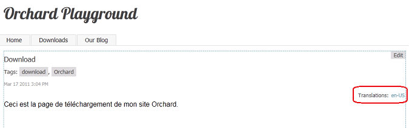
To enable localization for custom content types, add the Localization part to the content type. For example, to add localization to a custom content type named MyEvent, click Content on the dashboard, and then click the Content Types tab. Click Edit on the MyEvent type (this example assumes the custom type already exists). Click Add in the Parts section of the type. The Add screen is displayed, and you can select Localization or other parts to add.
要为自定义内容类型启用本地化，请将 Localization 部分添加到内容类型。例如，要将本地化添加到名为 MyEvent 的自定义内容类型，请单击仪表板上的内容，然后单击内容类型选项卡。单击 MyEvent 类型上的编辑（此示例假定自定义类型已存在）。单击类型的部分部分中的添加。将显示添加屏幕，您可以选择本地化或要添加的其他部分。
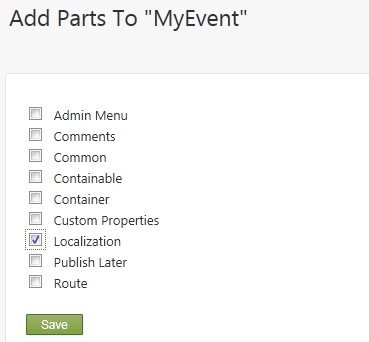
For more information about creating and working with custom content types, refer to the Creating Custom Content Types topic.
有关创建和使用自定义内容类型的更多信息，请参阅[创建自定义内容类型]（创建自定义内容类型）主题。
Note The localization feature is a work in progress, and not all parts of the Orchard application are yet localizable. For example, Orchard does not yet provide an automatic way to filter and display only content items in a given culture (one instance of this is the browser's default culture). We will address this in a future release. In the meantime you can provide your own implementation of
ICultureSelectorin a module. If you want to give us feedback on localization support in Orchard (for example, to help us understand the scenarios that are important for your site), please contact at join-orchard-localization@lists.outercurve.org and drop us a line!注意本地化功能正在进行中，并非Orchard应用程序的所有部分都可以进行本地化。例如，Orchard尚未提供一种自动方式来过滤和显示给定文化中的内容项（其中一个实例是浏览器的默认文化）。我们将在以后的版本中解决这个问题。在此期间，您可以在模块中提供自己的
ICultureSelector实现。如果您想向我们提供有关Orchard本地化支持的反馈（例如，为了帮助我们了解对您的站点非常重要的场景），请联系join-orchard-localization@lists.outercurve.org并告诉我们线！
Translating an Html Widget
翻译Html小部件
Note these steps apply to a clean installation using the default theme 'The Theme Machine'
注意这些步骤适用于使用默认主题'The Theme Machine'的全新安装
In the admin panel, navigate to Modules and verify that you have the Localization module installed and enabled. The next step is to navigate to Content in the admin panel. Select the Content Types tab page on top and click Edit to adjust the Html Widget. Our goal is to translate a Html Widget. Click Add Parts in the Parts section. Here we select the Localization part and click Save to add this part. At the bottom of the page click Save again to save your Content Item adjustments.
在管理面板中，导航到 Modules 并验证是否已安装并启用了 Localization 模块。下一步是导航到管理面板中的内容。选择顶部的内容类型标签页，然后单击编辑以调整 Html小组件。我们的目标是翻译Html Widget。单击零件部分中的添加零件。在这里，我们选择 Localization 部分，然后单击 Save 添加此部分。在页面底部再次单击保存以保存内容项调整。
Now we need to navigate to the Settings menu item in the admin panel. Under the section Default Site Culture you can add the cultures that you want to support. In our case we have nl-BE and en-US. Click Save to apply your culture settings.
现在我们需要导航到管理面板中的 Settings 菜单项。在默认站点文化部分下，您可以添加要支持的文化。在我们的例子中，我们有nl-BE和en-US。单击保存以应用您的文化设置。
Navigate to the Widgets menu item.
导航到 Widgets 菜单项。
On the Default layer find for example the FooterQuadThrid section and click Add to add a Widget.
在 Default 图层上找到 FooterQuadThrid 部分，然后单击 Add 添加一个Widget。
Now you need to Choose A Widget, select the Html Widget, because this is the one that we adjust.
现在你需要选择一个小工具，选择 Html Widget ，因为这是我们调整的那个。
Now fill in the needed information (Title and Content) and click Save.
现在填写所需信息（标题和内容），然后单击保存。
Your Html Widget is now added to the FooterQuadThird section.
您的Html小部件现已添加到FooterQuadThird部分。
Now we are ready to translate the item. Select you newly added widget to edit it. On top of the Edit Widget page you will find the following text: + New translation. Click this to add the translation for another culture.
现在我们准备翻译该项目了。选择新添加的小部件进行编辑。在编辑小部件页面的顶部，您将找到以下文本： +新翻译。单击此按钮可为其他区域性添加翻译。
Change History
改变历史
-
Updates for Orchard 1.8
-
Orchard 1.8的更新 *
- 11-03-14: Updated Localization steps and procedure (aka Crowdin)
-
11-03-14：更新了本地化步骤和程序（又名Crowdin） *
-
3-17-11: Updated for references to dashboard.
-
3-17-11: Updated screens and procedures in section on localizing database-driven content items.
-
3-18-11: Updated screens and procedures in section on localizing the Orchard application and modules.
-
4-12-11: Structure of the document modified. Added online tool tutorial.
-